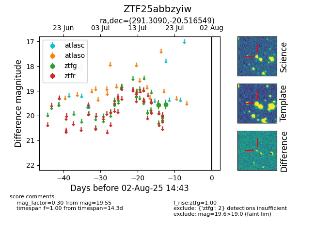

Target ZTF25abbzyiw at 2025-08-02 14:43, see:
FINK: fink-portal.org/ZTF25abbzyiw
Lasair: lasair-ztf.lsst.ac.uk/objects/ZTF25abbzyiw
ALeRCE: alerce.online/object/ZTF25abbzyiw
alt names
ZTF25abbzyiw (ztf,fink)
coordinates:
equatorial (ra, dec) = (291.3090,-20.51655)
galactic (l, b) = (17.8777,-16.39698)
photometry
last ztfg=19.55
2 ztfg detections
